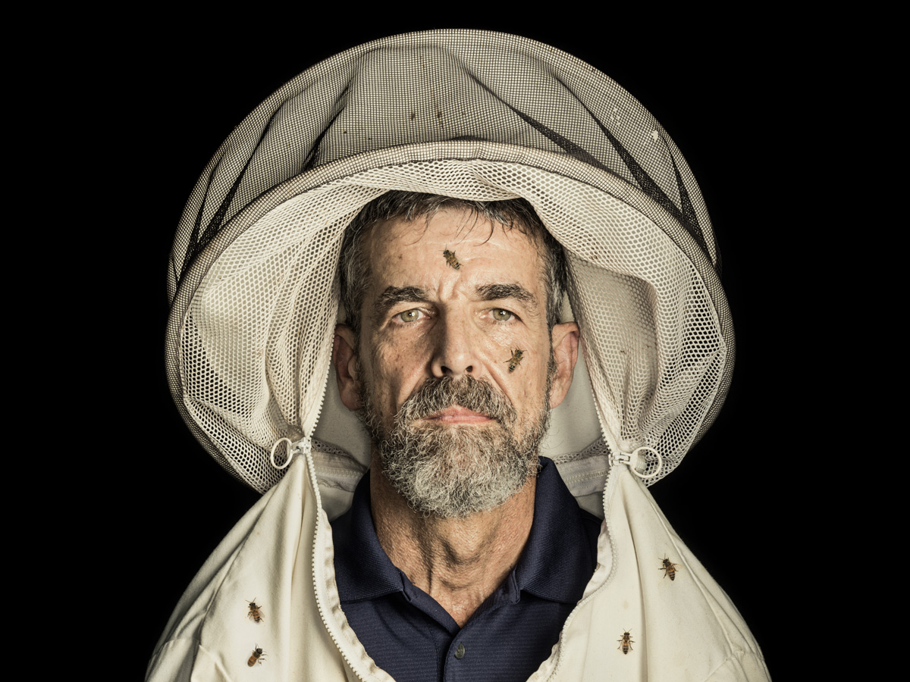

“MAKE A FIST,” says Jerry Hayes, waving his own in the air. “Now put it someplace on you.” About 150 people, the audience at a honeybee panel at the 2014 South by Southwest Eco conference, place their fists on their shoulders or collarbones. “Proportionally, this is how large a varroa mite is compared to a honeybee’s body,” Hayes says. The reddish-brown parasite, just a dot to the naked eye, drains the life out of bees and delivers a deadly cargo of viruses. “It would be like having a parasitic rat on you, sucking your blood.”
Under a microscope, a varroa mite is a monster: armored and hairy, with eight legs and one piercing, sucking mouthpart, primordial in its horror. Since the parasite arrived in the United States from Asia in 1987, the practice of tending bees has grown immeasurably harder. Beekeepers must use harsh chemicals in their hives to kill the mites or risk losing most of their bees within two to three years. About a third of the nation’s honeybees have died each winter over the past decade, and Hayes, an apiary scientist, believes the varroa mite is a major factor in this catastrophe.
“It’s money! You’re gonna make money! And until then you’re gonna kill as many bees as you can!” Hayes’ audience, however, believes something else. SXSW Eco is a conference for environmentalists, and these attendees are not inclined to blame the honeybee’s problems on an obscure arthropod. They’d rather blame Hayes. That’s because Hayes works for Monsanto, the St. Louis-based agricultural behemoth that environmentalists love to hate (and, I should add, the sponsor* of this panel, which I am moderating).
When the Q&A session begins, a petite woman who looks to be in her twenties approaches the microphone. “The room feels kind of tense,” she says. She explains that she’d like to hear more about pesticides, specifically a class called neonicotinoids, which many people blame for honeybee deaths. “Because,” she says, “we definitely covered mites.”
On it goes, one pesticide question after the next. Last in line is a burly fellow with blondish dreadlocks. His name is Walter, and he wears a yellow “Central Texas Bee Rescue” T-shirt. “OK now,” Walter says to Hayes, “you said there were things that we could do to help the honeybee. But in none of those things did you ever suggest that we stop spraying poison.”
Hayes begins a measured retelling of surveys, and data, and peer-reviewed studies. Varroa mites, he says, are a major threat to honeybees. Inadequate forage and nutrition are another, as is exposure to all kinds of agricultural and garden pesticides, some aimed at insects, others at mites, weeds, and fungi, all of which can work synergistically in the hive to—
Walter interrupts: “That’s shit you all made up.”
As the other panelists try to intercede, Walter shouts over them, “It’s money! You’re gonna make money!” You can see the spit flying. “And until then you’re gonna kill as many bees as you possibly can!”
Hayes is 62, lined and sinewy, his hair still dark. A gray-dappled beard frames his chin in such a way that his head seems to form a perfect rectangle. He doesn’t seek attention. He doesn’t talk about his feelings. As Walter continues, Hayes sits on the dais with his hands folded in front of him, silent, uncannily still.
BEFORE HE WAS a villain, Jerry Hayes was a hero. He considered himself one of the good guys. Many people did. They sought his advice. They smiled at him. “I like,” Hayes says, “to have people smile at me.”
Since the early 1980s Hayes has written “The Classroom,” an advice column for the American Bee Journal, America’s oldest bee magazine. He is Dear Abby for beekeepers, counseling readers on everything from capturing swarms to making shoe polish from beeswax. (To Tommy, a North Carolina beekeeper asking why his bees swarmed too late to survive the winter: “Sometimes the stupid gene expresses itself, Tommy. Genes are always testing themselves to see if they bring reproductive value.”)
For eight years before he joined Monsanto, Hayes ran Florida’s Apiary Inspection Section, which regulates the state’s bees and their keepers. More than 300 of Florida’s 4,000 registered beekeepers move their hives into the state for the winter—“like people from New Jersey,” Hayes says—and then, as spring approaches, pack them on trucks, 480 hives per semi, and head west and north to pollinate almonds, cherries, apples, blueberries, cranberries, vine fruits, pit fruits, onions, legumes—over $15 billion of US crops a year.
“We didn’t know what this was,” Hayes says, “but we had to give it a name.” They called it colony collapse disorder.
At summer’s end, those trucks return to Florida, carrying not only bees and honey but also viruses, bacteria, mites, beetles, ants, and fungi the bees picked up along the way. Hayes’ inspectors were tasked with intercepting those pests and pathogens before they spread to the rest of Florida’s—and the nation’s—bees. Add this to the list of weird stuff that happens in Florida: It’s where major honeybee plagues tend to begin.Hayes was good at the job. Florida beekeepers came to see him and his 14 inspectors as allies rather than adversaries. “I didn’t want us to be the bee police,” he says. In 2006, Hayes was elected president of the Apiary Inspectors of America.
That same year, a commercial beekeeper in Florida named David Hackenberg discovered that his apparently healthy bees had disappeared and reported it to Hayes. Other beekeepers had similar accounts. Late one night, as the losses mounted—the nation would lose a third of its bees that winter—Hayes got on the phone with a group of alarmed entomologists. “We didn’t know what this was,” Hayes says, “but we felt we had to give it a name.” They called it colony collapse disorder.
By early the next year, the Internet was abuzz with theories about CCD. It offered a litany of dystopian ecological conspiracies: cell phones interfering with bee navigation, or genetically modified corn syrup, or neonicotinoid pesticides. But no one really knew.
AROUND THAT TIME, Hayes went to a seminar about a gene modification technique called RNA interference. DNA is, of course, the spiraling, double-stranded molecule that encodes genetic information and determines everything about us: whether our eyes are blue or if we’re more likely to suffer a particular cancer. But the genome also relies on RNA—the single-stranded version of genetic code used in the protein factories of the cell.
RNA can also “silence” specific genes, preventing an organism from using them to make proteins. In 1998 scientists discovered that they could engineer stretches of double-stranded RNA to do the same thing. As a lab technique, RNA interference—or RNAi—turned out to be useful for learning about genes by turning them off. It also showed promise in fighting viruses, cancers, and even harmful pests and parasites. The researchers at the seminar were talking about using RNAi to prevent mosquitoes from spreading malaria, but that gave Hayes another idea. “I thought, could this be adapted to honeybee predator control?” In other words: to kill mites.
An Israeli company called Beeologics was thinking along similar lines. Beeologics’ president, Eyal Ben-Chanoch, didn’t actually know much about bees. But he knew people were worried about CCD, and he thought that a product aimed at fighting it would garner attention for his company. So he directed his researchers to look at using RNAi to control a bee disease that seemed related to CCD called Israeli acute paralysis virus. Ben-Chanoch heard that Hayes had been asking about the technology at bee conferences, got in touch, and set up a collaboration on field trials in Florida.
RNAi works like tweezers, plucking its victims with exquisite specificity by clicking into sequences of their unique genetic code.
Beeologics soon got the attention Ben-Chanoch had hoped for. News stories about the company’s forthcoming “affordable cure” for CCD attracted the eyes of executives at Monsanto. The company was already working on an RNAi-enhanced corn plant, engineered to disable the maize-eating Western corn rootworm, and researchers there saw even more potential. Traditional pesticides act like chemical backhoes, killing their targets (beetles, weeds, viruses) but harming good things along the way (beneficial insects, birds, fish, humans). RNAi, in theory, works instead like a set of tweezers, plucking its victims with exquisite specificity by clicking into sequences of genetic code unique to that organism. “If you could design an ideal pesticide, this is the stuff you’re looking for,” says Pamela Bachman, a toxicologist at Monsanto.
The problem was that synthesizing RNA was too expensive. But Beeologics found a way to do it at a relatively low cost and was testing it in Hayes’ Florida beehives. In 2011, Monsanto bought Beeologics and its RNAi tech and offered Hayes a job explaining it to beekeepers.
HAYES HAD SERIOUS reservations. He was happy in Florida. So was his family—his wife, Kathy, and their four children, two of whom were still in school. And he liked being an apiary inspector. The beekeeping industry was small, and he knew all the players. Monsanto had 22,000 employees, few of whom knew anything about honeybees. “Beekeepers look at Monsanto and other Big Ag companies as the enemy, spraying chemicals and killing bees’ forage,” Hayes says. He would be a lonely voice there: a man who loved insects in a place where insects are the enemy.
He had other concerns. There was the company’s nickname among eco-activists: Monsatan. And its lofty ranking on any list of the world’s most despised corporations. There were the muckraking documentaries (Seeds of Death, GMO OMG), the Twitter hashtag (#monsantoevil), the protest groups (Occupy Monsanto, Bee Against Monsanto). There were the rumors of farmers in India driven to suicide by GMO-incurred debt, the tales of sullied gene pools and browbeaten scientists and university stooges and journalist shills and Brobdingnagian government influence.
The rhetoric offended Hayes’ sense of fairness. He knew that environmentalists linked colony collapse to neonicotinoid insecticides and that they thought Monsanto was somehow to blame. But he also knew that Monsanto doesn’t make insecticides. The company’s most famous product, glyphosate—that’s Roundup—kills plants. Its second-most famous product—Roundup-ready seeds—allows plants to resist its most famous product.
There was a symbiosis there: Like flowers and bees, Monsanto and Hayes could exploit each other to their own ends.
Nor was Hayes convinced that neonicotinoids explained honeybee losses in the first place. When neonics came to market in the 1990s, farmers and environmentalists welcomed them as far less toxic to birds and mammals than earlier insecticides. Some studies raised concerns about sublethal effects on honeybees like impaired navigation, reproduction, and immune systems, but larger field studies didn’t.
Hayes came to realize that the same elements that cause people to loathe and fear Monsanto—its size, its resources, its influence on agricultural practices, its headlong embrace of futuristic technologies—presented an opportunity. “It has more money than any group that I’ve ever worked with,” he says.
As for Monsanto, “we wanted the process”—the RNAi technology—says Billy Brennan, the company’s international communications manager, “but we saw a tremendous opportunity to support honeybee health.” People were worried about dying bees; the company could show it was trying to help. There was a symbiosis there: Like flowers and bees, Monsanto and Hayes could exploit each other to their own ends.
Hayes and his wife had converted to Mormonism after their first child was born. And though he joined the church too late to travel the world preaching gospel, he nonetheless sees himself as a missionary. He wants to make a difference. “So,” he says, “I decided to stick my neck way outside of my shell.” He took the job.
Last updated: 11:42 am Wednesday, April 5, 2017